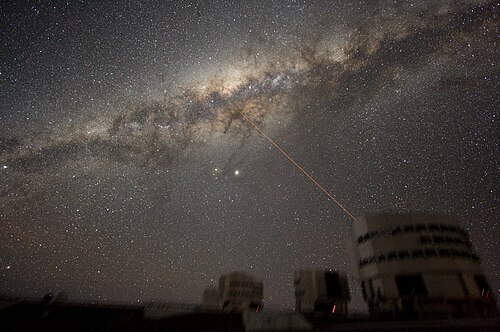
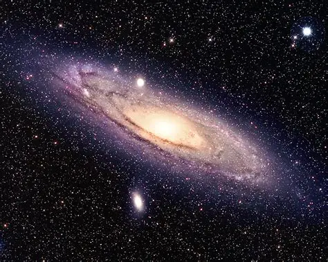
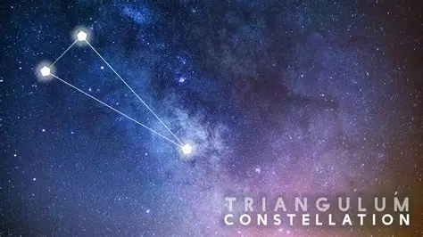
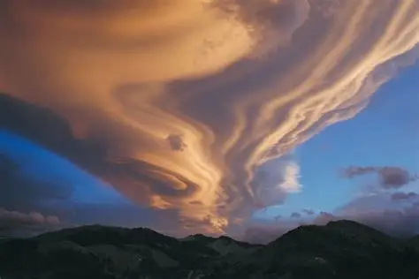

The Milky Way or Milky Way Galaxy is the galaxy that includes the Solar System, with the name describing the galaxy's appearance from Earth: a hazy band of light seen in the night sky formed from stars in other arms of the galaxy, which are so far away that they cannot be individually distinguished by the naked eye.


The Andromeda Galaxy (M31) is the nearest major spiral galaxy to the Milky Way, located approximately 2.5 million light-years away in the Andromeda constellation. It is the largest galaxy in the Local Group, spanning about 200,000 light-years, and is visible to the naked eye. It will collide with the Milky Way in the future.

Triangulum is a small, ancient constellation in the northern sky, known for its distinct narrow triangle shape formed by its three brightest stars ( , , and Trianguli). Visible in autumn, it is famous for containing the Triangulum Galaxy (M33), a spiral galaxy and the third-largest member of our Local Group.

Lenticular refers to a lens-shaped, double-convex, or disc-like form, typically with rounded, thinner edges and a wider, thicker middle, similar to a lentil. It is widely used in technology for 3D or motion-changing images (lenticular printing) and describes specific cloud formations, galaxies, and biological structures.